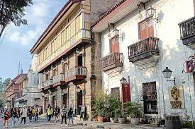

Metropolitan Manila encompasses six cities and 12 towns. Located on Manila Bay in the South China Sea, and bisected by the Pasig River, the capital of the Philippines is historic and modern, rich and poor. A popular sight is the walled area called Intramuros. The capital during Spanish colonization, Intramuros has retained old dungeons and gunpowder rooms but added art galleries and theaters. The city is filled with museums, shops, parks and churches, plus enough nightlife to last until dawn.
click the photo
Intramuros
Urban district and historic walled city within Metropolitan Manila, in the Philippines, meaning “within walls,” refers to the fortified city.